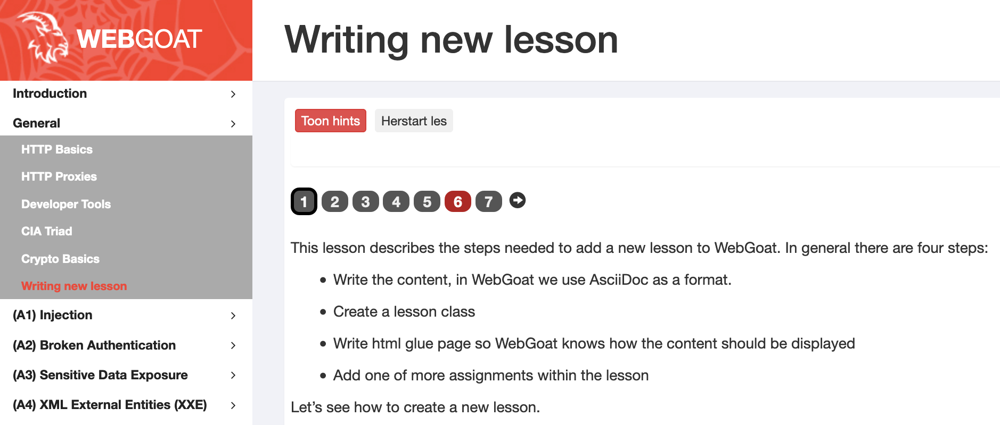

This page is for tips and tricks for developers who want to build WebGoat themselves and think about contributing to WebGoat.
Development and test of WebGoat can be done on Microsoft Windows, Apple MacOS or a Linux based OS. WebGoat is finally packaged and released as Java jar files and docker containers on Docker Hub. The end result should be runnable on all of the mentioned operating systems.
WebGoat also supports multiple languages. The unit tests and integration tests should be able to handle localisation and user zone settings.
Travis is used to test code that is pushed to GitHub. Everyone with a GitHub account can contribute by creating a fork of WebGoat, then create a branch off of develop in their local repository and making a cross repository pull request. This will trigger the Travis build. Pull requests require that a contributor signs an agreement. Otherwise the pull request can never be merged.
When you build or run the application with default settings make sure that the following ports are not in use:
git clone https://github.com/yourgitaccount/WebGoat.git
cd WebGoat
git checkout -b yourbranch
mvn clean install
The Java build results in two ‘executable’ jar files:
java -jar webgoat-server/target/webgoat-server-v8.2.0-SNAPSHOT.jar
This starts WebGoat with the UI on http://127.0.0.1:8080/WebGoat And an hsql database on port 9001 which has persistent data stored in .webgoat folder.
java -jar webwolf/target/webwolf-v8.2.0-SNAPSHOT.jar
This starts WebWolf with an UI on http://127.0.0.1:9090/WebWolf whixh is connected to the database on port 9001
When you open WebGoat for the first time, you will see the login screen. If you do not have a username and password, then you can use the register function to create a new user. As long as you do not delete the .webgoat folder that username and your results will be present when you use it the next time. Even if you stop and start the application.
At the root level there is a overall parent pom.xml which contains all the references to all components of WebGoat and WebWolf. Below this level there are a few main folders:
WebGoat comes with an built-in lesson on how to build your own WebGoat lesson. Make sure you first complete this exercise before you try to add a new lesson.
